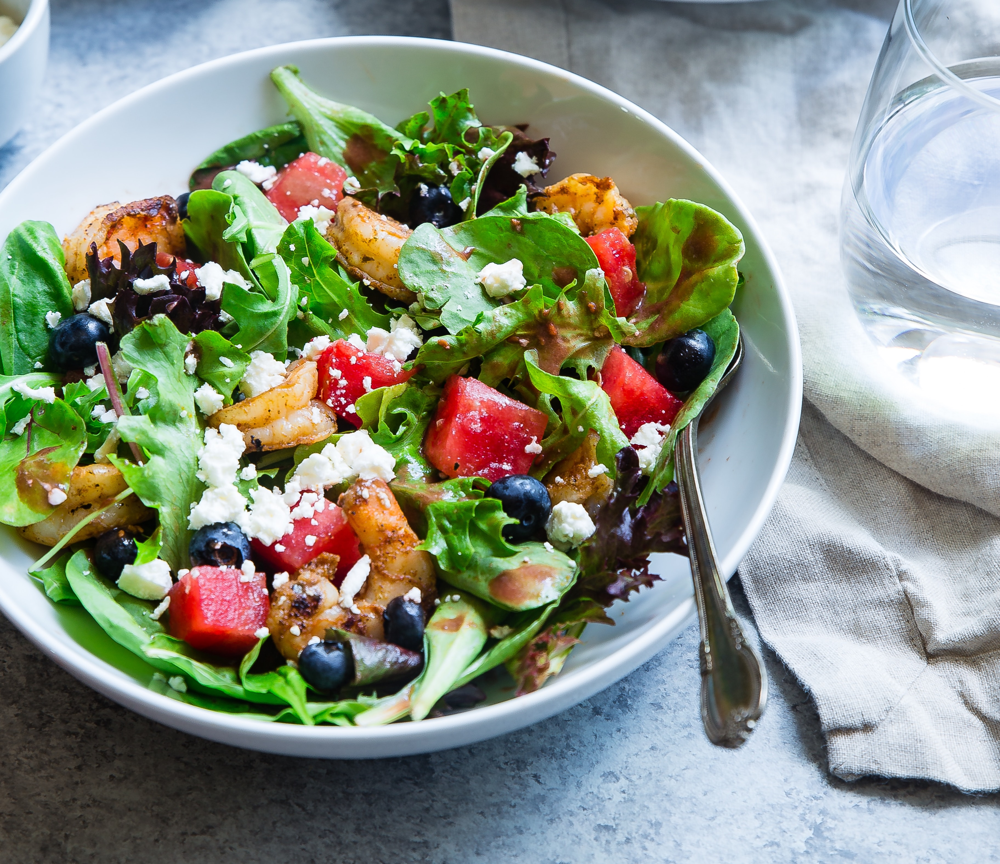
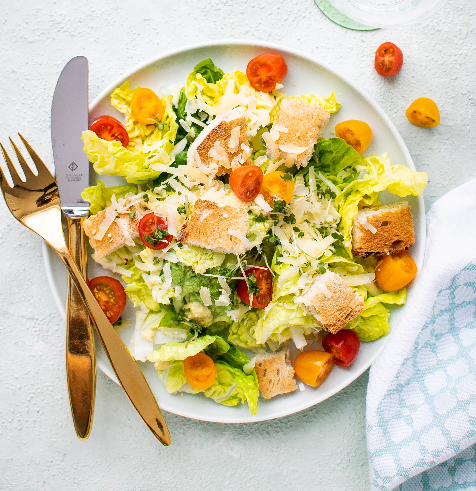

Ensalada de Verano
Ingredientes:
- Lechuga
- Tomates cherry
- Pepino
- Queso feta
- Aceitunas
- Aderezo de limón y aceite de oliva
Instrucciones:
- Lava y corta la lechuga.
- Corta los tomates cherry por la mitad.
- Pela y corta el pepino en rodajas.
- Desmenuza el queso feta.
- Combina todos los ingredientes en un tazón grande.
- Agrega las aceitunas.
- Prepara el aderezo de limón y aceite de oliva mezclando el jugo de limón y el aceite de oliva.
- Vierte el aderezo sobre la ensalada y mezcla bien.

Ensalada Cesar
Ingredientes:
- Lechuga romana
- Crutones
- Parmesano rallado
- Pollo a la parrilla
- Aderezo César
Instrucciones:
- Lava y corta la lechuga romana en trozos.
- Agrega los crutones y el parmesano rallado a la lechuga.
- Cocina el pollo a la parrilla hasta que esté bien cocido.
- Corta el pollo en tiras o cubos.
- Agrega el pollo a la ensalada.
- Añade el aderezo César y mezcla bien.
- Sirve y disfruta.